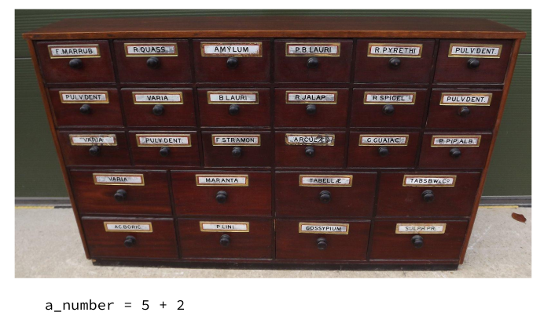

Ruby Monstas
Session 2: Variables
Variables
IRB: As soon as you hit Enter and the Ruby command has finished executing, the result is forgotten
We should be able to use the result of one line in the next
Enter variables!
The drawer metaphor
You can think of variables like drawers in an apothecary
The drawers each have a label on them and they contain a specific thing at any time (or nothing)
Assigning a variable
my_string = "Hello world"a_number = 5 + 2The drawer metaphor: Assignment
Syntax
my_string = "Hello world"a_number = 5 + 2=is called the assignment operator
=differs from how it's used in mathematics
variable_name = expression
Example expressions
5"Hello world"a_number.odd?my_string.include?("Hello")8 * 6(a_number / 5.0) + 42Expressions
An expression is any piece of Ruby code that returns a value
Any expression can be assigned to a variable!
b_number = (a_number / 5.0) + 42Reassignment
You can give existing variables a new value by reassigning
a_number = 5 + 2
a_number = 42Note: Note syntax is the same as for assignment
Note: The old value of the variable is lost by doing this
Reassignment
You can also use the variable in an expression when reassigning it
a_number = 5 + 2
a_number = a_number + 3Note: Here's where it definitely stops making sense mathematically ;-)
Variable types
A variable always has a specific type
For example String or Integer
Whenever Ruby executes a method on a variable, it first checks the type!
a_number = 5 + 2
a_number.lengthNoMethodError (undefined method `length' for 7:Integer)
Variable names
These characters are allowed:
- lower-case letters (
a - z
) - digits (
0 - 9
) - underscore (
_
)
_instead)
Variable names can't start with a digit
Variable names
Which of these are good variable names?
mynewvariable user_name date_of_birth 5_things AnotherVariableName list_of_favourite_drinks
What questions do you have?